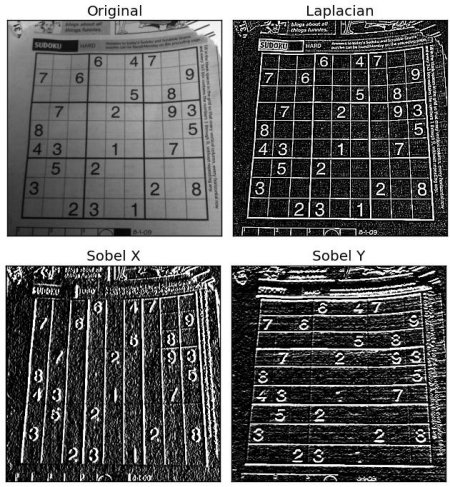

--
图像的边缘检测 -- 利用 OpenCV 的 Sobel 函数
import cv2
import numpy as np
from matplotlib import pyplot as plt
img = cv2.imread('dave.jpg',0)
laplacian = cv2.Laplacian(img,cv2.CV_64F)
sobelx = cv2.Sobel(img, cv2.CV_64F, 1, 0, ksize = 5)
sobely = cv2.Sobel(img, cv2.CV_64F, 0, 1, ksize = 5)
plt.subplot(2, 2, 1)
plt.imshow(img, cmap = 'gray')
plt.title('Original')
plt.xticks([])
plt.yticks([])
plt.subplot(2, 2, 2)
plt.imshow(laplacian, cmap = 'gray')
plt.title('Laplacian')
plt.xticks([])
plt.yticks([])
plt.subplot(2, 2, 3)
plt.imshow(sobelx, cmap = 'gray')
plt.title('Sobel X')
plt.xticks([])
plt.yticks([])
plt.subplot(2, 2, 4)
plt.imshow(sobely, cmap = 'gray')
plt.title('Sobel Y')
plt.xticks([])
plt.yticks([])
plt.show()

sobel 就是用一个 n * n 的 kernel 去对图像做卷积，算出各种梯度之类等等。
sobel 是带有方向的，我们可以用一个 kernel 计算在 x 轴方向上的梯度，也可以用另外一个 kernel 计算在 y 轴 方向上的梯度。 当然也可以算出梯度的绝对值，同时也计算出两者的向量和的绝对值。还可以算出梯度的方向。
def dir_threshold(img, sobel_kernel=3, thresh=(0, np.pi/2)):
gray = cv2.cvtColor(img, cv2.COLOR_RGB2GRAY)
sobelx = cv2.Sobel(gray, cv2.CV_64F, 1, 0, ksize=sobel_kernel)
sobely = cv2.Sobel(gray, cv2.CV_64F, 0, 1, ksize=sobel_kernel)
absgraddir = np.arctan2(np.absolute(sobely), np.absolute(sobelx))
binary_output = np.zeros_like(absgraddir)
binary_output[(absgraddir >= thresh[0]) & (absgraddir <= thresh[1])] = 1
return binary_output
下面有个简单的练习，我们如何在以下图片中把车道线找出来的最终我们得到的图片应该是这个样子的：

def abs_sobel_thresh(img, orient='x', thresh_min=0, thresh_max=255):
gray = cv2.cvtColor(img, cv2.COLOR_RGB2GRAY)
if orient == 'x':
abs_sobel = np.absolute(cv2.Sobel(gray, cv2.CV_64F, 1, 0))
if orient == 'y':
abs_sobel = np.absolute(cv2.Sobel(gray, cv2.CV_64F, 0, 1))
scaled_sobel = np.uint8(255*abs_sobel/np.max(abs_sobel))
binary_output = np.zeros_like(scaled_sobel)
binary_output[(scaled_sobel >= thresh_min) & (scaled_sobel <= thresh_max)] = 1
return binary_output
def mag_thresh(image, sobel_kernel=3, mag_thresh=(0, 255)):
gray = cv2.cvtColor(img, cv2.COLOR_RGB2GRAY)
sobelx = cv2.Sobel(gray, cv2.CV_64F, 1, 0, ksize = sobel_kernel)
sobely = cv2.Sobel(gray, cv2.CV_64F, 0, 1, ksize = sobel_kernel)
grad_mag = np.sqrt(soblex ** 2 + sobely ** 2)
# rescale to 8 bit
scale_factor = np.max(gradmag) / 255
grad_mag = (grad_mag / scale_factor).astype(np.uint8)
mag_binary = np.zeros_like(sobel)
mag_binary[(grad_mag > mag_thresh[0] ) & (grad_mag < mag_thresh[1]) ]
return mag_binary
def dir_threshold(image, sobel_kernel=3, thresh=(0, np.pi/2)):
gray = cv2.cvtColor(img, cv2.COLOR_RGB2GRAY)
sobelx = cv2.Sobel(gray, cv2.CV_64F, 1, 0, ksize = sobel_kernel)
sobelx = np.absolute(sobelx)
sobely = cv2.Sobel(gray, cv2.CV_64F, 0 ,1, ksize = sobel_kernel)
sobely = np.absolute(sobely)
direction = np.arctan2(sobely, sobelx)
binary_output = np.zeros_like(direction)
binary_output[(direction >= thresh[0]) & (direction <= thresh[1])] = 1
return binary_output
sobelx = cv2.Sobel(img, cv2.CV_64F, 1, 0, ksize = sobel_kernel)
sobely = cv2.Sobel(img, cv2.CV_64F, 0, 1, ksize = sobel_kernel)
return dir_binary
# Choose a Sobel kernel size
ksize = 3 # Choose a larger odd number to smooth gradient measurements
# Apply each of the thresholding functions
gradx = abs_sobel_thresh(image, orient='x', sobel_kernel=ksize, thresh=(0, 255))
grady = abs_sobel_thresh(image, orient='y', sobel_kernel=ksize, thresh=(0, 255))
mag_binary = mag_thresh(image, sobel_kernel=ksize, mag_thresh=(0, 255))
dir_binary = dir_threshold(image, sobel_kernel=ksize, thresh=(0, np.pi/2))